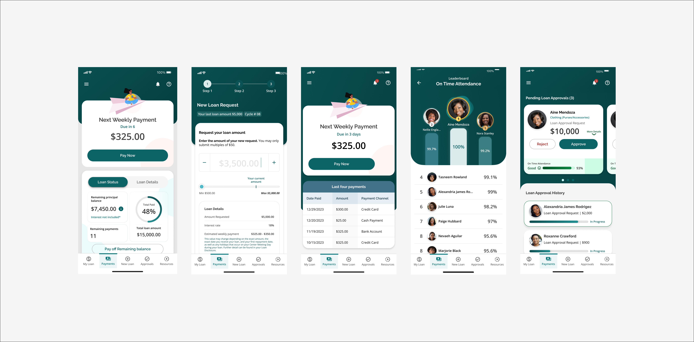

Grameen America
UX Design, 2024

UX Design, 2024
Grameen America’s model runs on trust, and members manage microloans through weekly in-person meetings. But that meant no way to check a loan balance, make a payment, or apply for a new loan outside of a meeting or a phone call, which ate up huge amounts of branch staff time.
I led the launch and adoption strategy for My Grameen, a bilingual mobile app built as a digital front door to the program. Working closely with center leaders and executives, I ran one-on-one usability tests with members over Zoom and sat in on center meetings to see how the app held up in real use. That research drove the improvements I shipped, from a home screen that puts loan status front and center with a one-tap "Pay Now," to a loan application redesigned as a short guided flow instead of paper, to a real-time view branch staff could use to track repayment and attendance across their group.
Registration hit 98% of members, 85% of loan applications now happen in-app, and the app holds a Net Promoter Score of 88 with over 20,000 reviews.